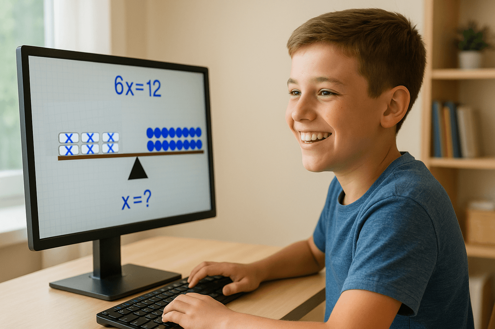
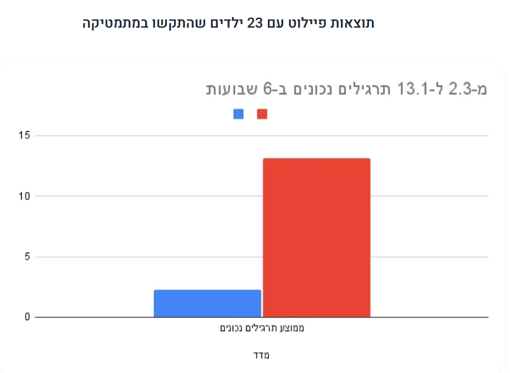
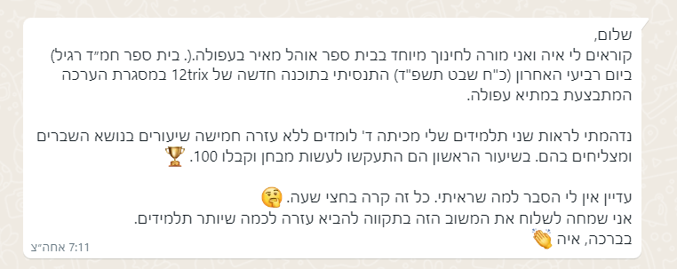

מ־"הקשב למורה" ל־"חקור בעצמך". מ־שינון להבנה. מ־הוראה להתנסות.
פלטפורמת למידה עצמית במתמטיקה — הילד מגלה, מבין ומתקדם בקצב שלו.

מקורות: UNESCO; OECD PISA 2022; IEA TIMSS; Ynet; Calcalist; Taub Center
המצב: אינספור תוכנות ומערכות תרגול, אך הפערים נשארים גבוהים.
למה? למידה נשענת על הסברים ושינון, לא על יצירת הבנה דרך עשייה.
הפתרון שלנו: למידה עצמית ויזואלית מבוססת חקר והתנסות.

| הוראה קלאסית | הגישה של 12Trix |
|---|---|
| המורה מסביר → הילד מתרגל | הילד מתרגל → הילד מבין |
| "נשמע ונעשה" | "נעשה ונשמע" |
| חשיבה דקלרטיבית | חשיבה אופרטיבית |
| למידה פסיבית | למידה פעילה והתנסותית |

כ‑180,000 ילדים בישראל (יסודי) מקבלים שיעורים פרטיים במתמטיקה.
12Trix מציעה אלטרנטיבה יעילה ומשתלמת — אפליקציות לימוד עצמי עם תוצאות מדידות.
בסיס ההערכה: 180,000 תלמידים פוטנציאליים × 70 ₪ לחודש.
כ‑3,300 בתי ספר יסודיים בישראל. מחיר מנוי שנתי לבית ספר (מודל גפ"ן): 9,000 ₪.
| תפקיד | עלות שנתית כוללת |
|---|---|
| CTO | ₪720,000–1,020,000 |
| פיתוח + QA | ₪310,000–500,000 |
| UI/UX בכירה | ₪340,000–480,000 |
| מעצב | ₪215,000–310,000 |
| מנהל שיווק | ₪340,000–500,000 |
| מזכירה | ₪155,000–200,000 |
סה"כ צוות מלא: ~ ₪2.1–3.0 מיליון לשנה | אפשרות Lean: ₪1.2–1.6 מיליון.
Feet to Market — ניסוי • מדידה • שיפור • הטמעה
בסיס: אמון אישי, ייעוד משותף, ותוצאות מדידות. ערך הפיתוח, הניסיון וה‑IP של 12Trix הם הליבה.
| 12Trix | מורל | |
|---|---|---|
| נכסים קיימים | מוצר בשל (₪750k–₪1M) | אולפן פעיל |
| מומחיות | אפליקציות לימוד מתמטיקה מבוססות תוצאות | תוכן משפחתי וקהילה קטנה של אימהות |
| ניסיון בשטח | פיילוטים בבתי ספר, 16→91 | תקשורת רכה, שיווק אורגני |
| גישה לקהל | ילדים, הורים, מורים (נתוני שימוש) | מורל האימהות (48), מורל TV (107) |
| הזדמנות | חדירה לשוק ההורים בקנה מידה | מיצוב חינוכי עם מוצר מוכח |
| טריקס | מורל | |
|---|---|---|
| אחוזים לאחר עמידה ביעדים | ? | ? |
חלוקת אחריות ותנאים נוספים ייקבעו בהסכם חתום.
בעולם שבו כולם מסבירים לילד איך לחשוב — אנחנו מאפשרים לו לגלות בעצמו.
מ‑שינון → להבנה. מ‑הוראה → להתנסות. כל ילד יכול להצליח במתמטיקה — לא בזכות עוד שיעור, אלא בזכות חוויה.
יחד נוכל להוביל שינוי חינוכי אמיתי בישראל.